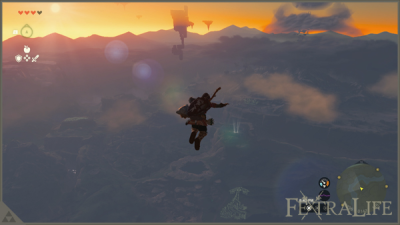
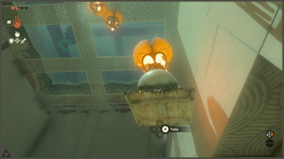
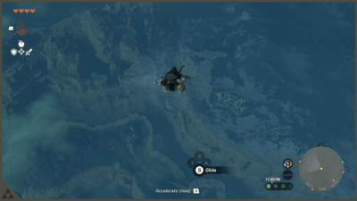
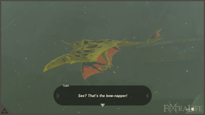
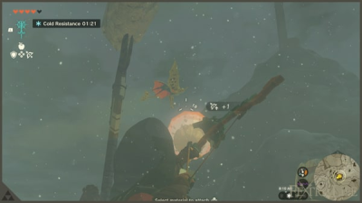

Progress Route: Index đầy đủ (Prologue → Demon King)
Index theo fextralife Game Progress Route + Walkthrough. Mỗi vùng liệt kê đầy đủ các bước; chi tiết walkthrough đang được bổ sung theo Phase B (Prologue & Great Sky Island, Central Hyrule đã chi tiết).
1. Prologue & Great Sky Island (Mở đầu và Đảo Trời)
Game Progress Route (19 bước)
- Nhảy xuống hồ nước có lá sen.
- Gặp Steward Construct để nhận gợi ý và hướng dẫn.
- Đến Đền Thờ Thời Gian, nói chuyện với Rauru.
- Rauru bảo bạn phải hồi phục năng lực và hoàn thành các đền thờ nhỏ.
- Hoàn thành Đền Thờ Nhỏ Ukouh, nhận Siêu Tay.
- Đi về phía Tây, nhặt chiếc rìu đá dựng ở gốc cây.
- Chặt cây bằng rìu để làm cầu bắc qua khe.
- Đến Đền Thờ Nhỏ In-isa, nhận Ghép.
- Đi về phía Đông Nam đến Hang Pondside lấy Áo Cổ Đại.
- Hạ con Ếch Bubbul đầu tiên, lấy Ngọc Bubbul.
- Dùng nồi nấu ăn chuẩn bị món, ớt cay để chống lạnh.
- Vào hang khai thác lấy Zonai Charge và Zonai Capsule.
- Hạ Like-Like rồi đi tiếp xuống hố không đáy để tới Đền Thờ Nhỏ Gutanbac.
- Hoàn thành Đền Thờ Nhỏ Gutanbac, nhận Xuyên.
- Quay về Đền Thờ Thời Gian nhận Hồi Tưởng.
- Thử mở cánh cửa đôi; Rauru nói chuyện tiếp.
- Rauru cho biết vẫn còn đền thờ nhỏ thứ tư.
- Đến Đền Thờ Nhỏ Nachoyah nhận Ánh Sáng Chúc Phúc.
- Quay về Đền Thờ Thời Gian đổi Ánh Sáng Chúc Phúc lấy Bình Máu.
Prologue – Hyrule Castle Ruins (Mở đầu – Tàn tích Lâu Đài Hyrule)
Bạn và Zelda đi xuống tàn tích bên dưới Lâu Đài Hyrule. Cứ theo đường hầm thẳng, dùng Thanh Kiếm Huyền Thoại hạ ba con dơi. Zelda soi đuốc xem bức phù điêu rồi cả hai vào phòng giam, đụng phải xác ướp của Ganondorf. Hắn tỉnh dậy, bóp nát cánh tay phải của Link; thanh kiếm gãy, Zelda rơi xuống vực và mất tích.
Link tỉnh dậy với cánh tay mới, nhặt thanh kiếm gãy, chém dây leo (phím Y), chạm viên đá xanh để mở cửa rồi nhảy xuống hai hồ nước — nước làm giảm sát thương khi rơi. Mở rương bên trái lấy Quần Cổ Đại, men theo ánh sáng để lên Đảo Trời.
📷 Xem ảnh (4)


Great Sky Island – Room of Awakening (Đảo Trời – Phòng Thức Tỉnh)
Bạn nhận Cành Cây, mở túi đồ và trang bị (D-pad + cần phải). Hái ít nhất ba quả Táo để hồi máu, rồi hạ Soldier Construct đầu tiên — nhặt Sừng Construct và Zonai Charge nó rơi ra. Nhặt thêm Gậy Gỗ trong mấy túp lều quanh đây.
Gặp Steward Construct để nhận Purah Pad: từ giờ bạn mở được bản đồ và Nhật Ký Phiêu Lưu. Nhiệm vụ chính Find Princess Zelda được kích hoạt, điểm đánh dấu nằm ở Đền Thờ Thời Gian phía Bắc. Lúc này bạn chưa có Dù Lượn, muốn xuống thấp thì phải nhảy xuống nước hoặc men theo vách đá.
📷 Xem ảnh (5)


Reach the Temple of Time (Đến Đền Thờ Thời Gian)
Chạm viên đá xanh để bật cây cầu, đi qua và hạ Soldier Construct đứng canh. Hái thêm Táo dọc đường rồi dọn ba Soldier Construct chặn lối. Bơi qua hồ, leo cầu thang đá là tới Đền Thờ Nhỏ Ukouh; nhặt Nấm Rushroom mọc quanh đó.
Trong đền có ba bài giải đố. Bài một: dùng Siêu Tay nhấc tấm đá lát làm cầu. Bài hai: ghép hai tấm ván đá thành cây cầu dài. Bài ba: đặt ván gỗ lên móc treo làm cabin trượt trên thanh kim loại, canh lúc cabin tới thì nhảy vào. Chạm bàn thờ nhận Ánh Sáng Chúc Phúc.
Rauru xuất hiện, bảo bạn phải hồi phục năng lực đã mất và hoàn thành thêm các đền thờ nhỏ để mạnh lên.
📷 Xem ảnh (3)


📷 Xem ảnh (8)


Ukouh Shrine – Ultrahand (Đền Thờ Nhỏ Ukouh – Siêu Tay)
Rời đền, đi về phía Tây rồi nhảy xuống vùng trũng; hạ Soldier Construct, nhặt cây cung đầu tiên cùng Nấm Trời và Mũi Tên. Leo lên cầu thang đá, đánh úp Soldier Construct canh trên đỉnh để lấy vũ khí cận chiến.
Đi tiếp về phía Tây, nhặt chiếc rìu đá dựng ở gốc cây, rồi chặt thân cây đổ xuống làm cầu bắc qua khe. Có Siêu Tay trong tay, bạn cũng nhấc được các tấm đá và ghép vật thể rời thành cầu tạm.
📷 Xem ảnh (11)


📷 Xem ảnh (3)


In-isa Shrine – Fuse (Đền Thờ Nhỏ In-isa – Ghép)
Rauru trao cho bạn năng lực Ghép. Bài một: ghép thanh Đại Kiếm Gỉ với tảng đá để thành cây búa, đập vỡ bức tường đá chặn đường.
Bài hai: đập cột đá để mở rương có 5 Mũi Tên; hái Quả Lửa, ghép vào mũi tên rồi bắn cháy giàn dây leo — rương rơi xuống cho Chìa Khóa Nhỏ, mở cửa đi tiếp.
Bài ba: hạ Captain Construct I, dùng mũi tên lửa đốt giàn dây leo trên sàn rồi đập vỡ tường đá bằng vũ khí vừa ghép. Chạm bàn thờ nhận Ánh Sáng Chúc Phúc.
📷 Xem ảnh (8)


📷 Xem ảnh (3)


Gutanbac Shrine – Ascend (Đền Thờ Nhỏ Gutanbac – Xuyên)
Steward Construct đưa bạn Pin Năng Lượng và chỉ cách dùng thiết bị Zonai. Đi về phía Đông Nam vào hang: dọn hai Chuchu và hai Soldier Construct, mở rương cạnh nồi nấu ăn để lấy Lưỡi Hái Của Lính. Hang Pondside khá đơn giản — có Keese và một con Ếch Bubbul, hạ nó lấy Ngọc Bubbul.
Dùng Ghép đập vỡ tường đá, phá các trụ tinh thể (Muối Đá, Hồng Ngọc, Đá Lửa, Hổ Phách) rồi tìm chiếc Áo Cổ Đại. Đóng bè bằng 3 Khúc Gỗ và 2 Cánh Quạt để qua hồ. Trong Hang Khai Thác nhặt Hạt Sáng; Hang Hố Sâu có hai quả Ớt Cay — nhớ hái, vì ớt cay nấu thành món cay giúp chống lạnh khi lên vùng tuyết. Hang Không Đáy có thêm một con Ếch Bubbul, Hoa Bom và một con Like-Like.
Rauru trao năng lực Xuyên. Bài một: Xuyên lên trần để lên tầng trên. Bài hai: Xuyên vào cây cột có rương (Rìu Đá), Xuyên tiếp cột kế bên và hạ Soldier Construct. Bài ba: cắt dây cho tấm đá rơi xuống, Xuyên từ dưới lên, canh đúng lúc bệ di động trượt tới thì Xuyên để đáp lên. Chạm bàn thờ nhận Ánh Sáng Chúc Phúc.
📷 Xem ảnh (10)


Return to Temple of Time & Nachoyah Shrine (Quay lại Đền Thờ Thời Gian và Đền Thờ Nhỏ Nachoyah)
Dùng Xuyên lên khu vực cao gần cửa hang Gutanbac. Trong thân cây có rương đựng Ống Chân Sưởi Cổ Đại. Quanh đây có Cánh Zonai và Máy Phân Phát Zonai; đặt cánh lên bệ phóng bằng Siêu Tay, nhảy lên rồi lượn về phía Đền Thờ Thời Gian — chưa có Dù Lượn nên phải tận dụng cánh rồi lao xuống hồ.
Leo lên đền, chạm cánh cửa đôi: Rauru nói chuyện, nhiệm vụ The Closed Door hoàn thành, bạn nhận Hồi Tưởng. Dùng Hồi Tưởng quay ngược các bánh răng khổng lồ để leo lên, đáp lên trụ giữa rồi quay ngược bánh răng trung tâm để sang khu trong. Ở đó có tượng Nữ Thần, nhưng cánh cửa lớn đòi một Bình Máu — muốn đổi phải có 4 Ánh Sáng Chúc Phúc.
Rauru bảo vẫn còn một đền thờ nhỏ nữa. Dịch chuyển về Phòng Thức Tỉnh, Xuyên qua khối đá cạnh bánh răng, quay ngược bánh gần nhất để nhảy lên và vào hang, tìm Đền Thờ Nhỏ Nachoyah. Bài một: quay ngược chiếc bè để nó đi ngược chiều và nhảy lên. Bài hai: quay ngược bè từ thác nước để lên cao; quay bánh răng lớn để lên bệ trên, lấy 10 Mũi Tên. Bài ba: hai kim đồng hồ, cổng chỉ mở khi hai kim chạm nhau — quay ngược kim chạy thuận để cả hai cùng quay và cửa mở.
Chạm bàn thờ nhận Ánh Sáng Chúc Phúc thứ tư, rồi đặt cánh lên bệ phóng để lượn về hồ trước Đền Thờ Thời Gian và đổi lấy Bình Máu đầu tiên.
📷 Xem ảnh (22)


Mẹo: trước khi lên vùng tuyết, nấu sẵn món Ớt Cay Xào; tiết kiệm Zonai Charge; mang Hạt Sáng khi vào hang tối; nhặt thêm vũ khí cận chiến vì chúng rất dễ gãy; dùng Xuyên để đi tắt lên các mốc cao.
Prologue & Đảo Trời: 19/19 bước trong index đã có walkthrough chi tiết.
2. Central Hyrule: Lookout Landing (Trung Tâm Hyrule: Lookout Landing)
Game Progress Route (27 bước)
- Đến Lookout Landing, nói chuyện với Purah.
- Khám phá tàn tích rơi xuống trong Lookout Landing (đổi đồ với Steward Construct).
- Nói chuyện với Addison, người đang dựng biển gỗ.
- Giúp Addison (nhận Rupee, cơm rau, vé ngủ).
- Hoàn thành Đền Thờ Nhỏ Kyononis (Kiếm Zonai + Ánh Sáng Chúc Phúc).
- Đến Lâu Đài Hyrule báo cáo cho Hoz.
- Hoz chứng kiến Zelda biến thành ánh sáng rồi biến mất.
- Dịch chuyển nhanh về Lookout Landing, nói chuyện với Purah.
- Purah nói Tháp Quan Sát cần sửa; chờ đợi và khám phá xung quanh.
- Tiếp cận bãi đất có chất đỏ (U Ám) trào ra từ hố.
- Nói chuyện với Daval để tìm hiểu về U Ám.
- Hoàn thành Đền Thờ Nhỏ Jiosin (Thuốc Nhanh Nhẹn + Ánh Sáng Chúc Phúc).
- Dùng Xuyên lên tảng đá lớn; nhặt đá tìm Hạt Korok; hái Quả Lửa.
- Nói chuyện với Suzuna (Thuốc Bền Bỉ).
- Nhặt thanh đại kiếm; mở nhiệm vụ phụ Bring Peace to Hyrule Field.
- Đánh bại toàn bộ quái trong vùng (nhận Rupee Bạc).
- Thuần hóa ngựa.
- Tiếp cận Purah ở chân Tháp Quan Sát (đoạn cắt cảnh).
- Nhận Dù Lượn; mở nhiệm vụ chính Crisis at Hyrule Castle.
- Lên Tháp Quan Sát Lookout Landing (cập nhật bản đồ, thử Dù Lượn).
- Nói chuyện với Purah; mở nhiệm vụ chính Regional Phenomena.
- Hoàn thành Đền Thờ Nhỏ Yamiyo (3 Hoa Bom + Ánh Sáng Chúc Phúc).
- Hoàn thành Đền Thờ Nhỏ Ishodag (quạt Zonai, Opal, Ánh Sáng Chúc Phúc).
- Gặp Impa trên bệ đá cạnh đống lửa trại; mở nhiệm vụ chính Impa and the Geoglyphs.
- Sửa Khinh Khí Cầu; lượn qua hình vẽ mặt đất; tìm vũng nước.
- Xem Ký Ức về Zelda, Vua Rauru và Hoàng Hậu Sonia.
- Impa cắt ngang; mở nhiệm vụ chính The Dragon's Tears.
Central Hyrule Region, Lookout Landing (Vùng Trung Tâm Hyrule – Lookout Landing)
Sau khi rời Đền Thờ Thời Gian, bạn rơi xuống đồng bằng Trung Tâm Hyrule. Cứ đi theo con đường lớn, nhìn cột sáng và toà tháp canh giữa bản đồ là tới Lookout Landing. Lính gác chỉ bạn tới toà nhà có chiếc kính viễn vọng lớn, nơi Purah đang làm việc. Nói chuyện với Josha trước rồi vào gặp Purah để xem đoạn cắt cảnh.
Purah giao bạn lên Lâu Đài Hyrule tìm Đội Trưởng Hoz: nhiệm vụ chính To the Kingdom of Hyrule hoàn thành, Crisis at Hyrule Castle bắt đầu. Trước khi đi, ghé khu tàn tích rơi xuống ngay trong trại — có Steward Construct đổi đồ và mấy thùng nguyên liệu.
📷 Xem ảnh (7)


Hyrule Castle & Captain Hoz (Lâu Đài Hyrule và Đội Trưởng Hoz)
Lâu Đài Hyrule nằm ngay phía Bắc Lookout Landing. Đi vòng qua cổng để vào, theo lối chính lên phần nền cao của lâu đài. Tới First Gatehouse thì nhặt thanh kiếm và Giáo Lính, dùng Xuyên lên khu phía trên.
Đội Trưởng Hoz đang đứng quan sát từ mỏm đá. Lại gần thì đoạn cắt cảnh chạy: Zelda hiện ra giữa không trung, loé sáng rồi biến mất, Hoz và binh lính sững người. Đây là mốc mở nhiệm vụ Crisis at Hyrule Castle.
📷 Xem ảnh (9)


Lookout Landing Skyview Tower & Paraglider (Tháp Quan Sát và Dù Lượn)
Dịch chuyển nhanh về Lookout Landing, báo lại cho Purah. Cô ấy nói muốn điều tra các vùng lân cận thì phải có dữ liệu bản đồ, mà Purah Pad của bạn vẫn trống. Cả trại thức trắng dựng lại Tháp Quan Sát. Trong lúc chờ, vào Hầm Trú Ẩn để nấu ăn, ngủ lấy lại máu và mua thêm đồ ở tượng Nữ Thần.
Sáng hôm sau tháp đã sẵn sàng. Mua Áo Hylian và Mũ Trùm Hylian nếu đủ Rupee, nói chuyện với Purah để xem cảnh mọi Tháp Quan Sát trên mặt đất được kích hoạt. Đứng vào bệ, kích hoạt tháp rồi phóng lên trời: bản đồ mặt đất và bản đồ trời được cập nhật, đồng thời bạn nhận Dù Lượn — từ đây có thể nhảy từ trên cao và mở dù để lượn xa.
Purah giao nhiệm vụ chính Regional Phenomena: điều tra hiện tượng lạ ở bốn vùng. Đây là chuỗi nhiệm vụ dài nhất game vì mỗi vùng lại có mạch nhiệm vụ chính riêng.
📷 Xem ảnh (6)


Gloom and Daval (U Ám và Daval)
Quanh Lookout Landing có một hố lớn đang trào chất đỏ sền sệt — đó là U Ám. Đừng dẫm lên: U Ám rút cạn tim của bạn và không hồi lại bằng cách thường, muốn lấy lại phải về tượng Nữ Thần hoặc ăn món có ánh sáng.
Nói chuyện với Daval đứng gần miệng hố, anh ta giải thích U Ám lan từ dưới Vực Sâu lên và chỉ cách nhận biết vùng đất đã bị nhiễm. Ghi nhớ đặc điểm này vì các vùng sau, nhất là dưới Vực Sâu, U Ám xuất hiện dày đặc.
📷 Xem ảnh (3)


Jiosin Shrine (Đền Thờ Nhỏ Jiosin)
Đền này dạy những động tác chiến đấu cơ bản, chỉ có hai bài giải đố nhưng đáng làm kỹ vì bạn sẽ dùng suốt cả game. Trước khi vào, nhặt thanh Đại Kiếm Gỉ và Khiên Gỉ dựng bên ngoài.
Bài một: né ngang đúng lúc đòn của Captain Construct I sắp chạm — màn hình chuyển sang Ngưng Thời Gian, bấm đòn để kích hoạt Liên Hoàn Kích. Bài hai: lùi lại thay vì né ngang, canh đúng nhịp để Né Hoàn Hảo rồi Liên Hoàn Kích.
Bài ba: giơ khiên và đỡ đúng lúc để bật đòn ra. Bài bốn: giữ nút đánh để tích lực, thanh thể lực chuyển thành thanh tích, nhả ra khi đầy để tung đòn nặng. Xong cả bốn bài là hạ được Captain Construct; chạm bàn thờ nhận Ánh Sáng Chúc Phúc và mở điểm dịch chuyển nhanh. Cứ luyện Né Hoàn Hảo và Liên Hoàn Kích cho thuần, đa số trận sau sẽ thành dễ.
📷 Xem ảnh (2)


Camera Work in the Depths (Ghi Hình Trong Vực Sâu)
Trước khi đi các vùng khác, hãy hoàn thành nhiệm vụ này. Xuống phòng dưới của Purah, nói chuyện với Robbie và Josha: họ cần bạn chụp ảnh dưới Vực Sâu. Đi theo điểm đánh dấu tới Hố Sụt Hyrule Field ở phía Nam Lookout Landing. Nhớ làm Đền Thờ Nhỏ Jiosin trước để có điểm dịch chuyển khi quay lên.
Nhảy xuống hố, mở Dù Lượn để giảm tốc và tránh vệt U Ám. Vực Sâu tối om nên cần 3-5 Hạt Sáng: ném xuống đất rồi đánh cho vỡ, hoặc ghép vào mũi tên bắn đi. Gặp Ponnick, kích hoạt Rễ Sáng Nisoij để mở bản đồ vùng này. Đi về phía Tây, né U Ám, dọn các cứ điểm Bokoblin và Moblin bị nhiễm rồi kích hoạt Rễ Sáng Iayusus.
Quay lại chỗ Robbie, nói chuyện để mở Camera trong Purah Pad. Chụp bức tượng giơ tay gần đó, rồi về Lookout Landing đưa ảnh cho Josha — bạn nhận 5 Zonaite. Nhiệm vụ Camera Work in the Depths hoàn thành.
📷 Xem ảnh (10)


Photographing the Statue (Chụp tượng và trả nhiệm vụ)
Mở Camera trong Purah Pad rồi căn khung vào bức tượng giơ tay. Giữ máy ổn định, chỉnh zoom và chụp khi khung chuyển màu — ảnh đạt yêu cầu sẽ được đánh dấu trong album.
Mang ảnh về Lookout Landing cho Josha để nhận 5 Zonaite và mở khoá toàn bộ chức năng Camera. Từ đây bạn có thêm công cụ chụp ảnh, rất tiện khi cần ghi lại vị trí rương hoặc địa điểm lạ.
📷 Xem ảnh (9)


Impa and the Geoglyphs (Impa và Hình Vẽ Mặt Đất)
Impa đang đứng trên bệ đá cạnh đống lửa trại phía Đông Lookout Landing. Nói chuyện để mở nhiệm vụ chính Impa and the Geoglyphs: bà nhờ bạn tìm các hình vẽ mặt đất rải khắp Hyrule.
Sửa chiếc Khinh Khí Cầu gần đó bằng cách gắn quạt Zonai vào bệ, rồi lượn qua hình vẽ trên đồng để tìm vũng nước ở giữa. Nhảy xuống đúng vũng nước sẽ mở Ký Ức: Zelda đứng cùng Vua Rauru và Hoàng Hậu Sonia.
Impa cắt ngang đoạn ký ức và nhận ra đây là manh mối lớn — bà giao tiếp nhiệm vụ chính The Dragon's Tears: tìm đủ các Giọt Lệ Rồng để xem trọn chuỗi ký ức quá khứ.
Side Stops around Lookout Landing (Các việc phụ quanh Lookout Landing)
Dùng Xuyên lên tảng đá lớn giữa đồng rồi nhặt đá trên đỉnh để tìm Hạt Korok. Quanh đồng có bụi Quả Lửa, hái sẵn vài quả vì rất tiện để đốt dây leo và làm mồi lửa.
Nói chuyện với Suzuna gần trại, cô ấy đưa bạn Thuốc Bền Bỉ. Nhặt thanh đại kiếm ở doanh trại bỏ hoang để mở nhiệm vụ phụ Bring Peace to Hyrule Field: dọn sạch quái trong vùng rồi nhận Rupee Bạc.
Ra đồng thuần hóa ngựa: tiếp cận từ phía sau, vuốt ve cho dịu rồi cưỡi lên, mang về Trạm Ngựa gần nhất đăng ký. Làm thêm Đền Thờ Nhỏ Yamiyo (3 Hoa Bom) và Đền Thờ Nhỏ Ishodag (quạt Zonai, Opal) để có thêm điểm dịch chuyển nhanh.
Mẹo: tránh Lynel, Hinox và Construct lớn khi chưa đủ máu; nhặt nguyên liệu dọc đường; nấu món hồi máu trước khi xuống Vực Sâu; Tháp Quan Sát nào cũng là điểm dịch chuyển nhanh. Thiếu Rupee thì bán Opal, Hổ Phách, Hồng Ngọc — nhưng giữ lại ít nhất 20 Hạt Sáng.
Central Hyrule: 27/27 bước trong index đã có walkthrough chi tiết.
3. Hebra Region: The Vow of Tulin (Vùng Hebra: Lời Thề của Tulin)
Game Progress Route (31 bước)
- Đi đến Trạm Ngựa New Serenne; ngủ qua đêm; đăng ký ngựa.
- Đền Thờ Nhỏ Sinakawak: nhận 1 Opal và 1 Ánh Sáng Chúc Phúc.
- Đi về phía Tây Bắc đến Tháp Quan Sát Lindor's Brow và kích hoạt.
- Lucky Clover Gazette: nhận nhiệm vụ phụ Potential Princess Sightings (bộ giáp Froggy).
- Đi theo điểm đánh dấu Giọt Lệ Rồng (xem Ký Ức).
- Đi đến Forgotten Temple trong dãy Hebra Mountains.
- Gặp Impa bên ngoài Đền Thờ Nhỏ Mayausiy.
- Xác định vị trí hình vẽ mặt đất trên bản đồ.
- Đi đến Đền Thờ Nhỏ Makurukis; đi theo điểm đánh dấu nhiệm vụ Regional Phenomena.
- Nói chuyện với Meeshy (mở ra nhiệm vụ Misko's Treasure).
- Đến Flight Range; nói chuyện với Kaneli.
- Đi đến Tháp Quan Sát Rospro Pass và kích hoạt.
- Tương tác Tượng Nữ Thần (đổi Ánh Sáng Chúc Phúc).
- Nhiệm vụ phụ Molli the Fletcher (nhận 10 Mũi Tên).
- Tìm Tulin trên bệ đá; nói chuyện với Teba và Saki (mở nhiệm vụ Tulin of Rito Village).
- Đi đến nhà nghỉ có 2 đống lửa (Hebra Trailhead Lodge); nói chuyện với Harth.
- Đi theo đường mòn đến Hang Hebra South Summit.
- Vào hang; nói chuyện với Tulin; lấy lại cây cung bị đánh cắp.
- Đi lên đến Eye of the Storm.
- Trên bệ của Ark, tiến đến luồng sáng xanh đang che giấu nguồn cơn bão.
- Nghe giọng nói từ Ark yêu cầu gỡ các ổ khóa và mở cửa sập.
- Gỡ đủ 5 ổ khóa; quay về sàn chính của Đền Thờ Gió.
- Mở cửa sập để bắt đầu trận Boss Colgera.
- Bão tuyết tan; bầu trời Làng Rito trở lại trong xanh.
- Tulin và Link nói chuyện với các chiến binh Rito.
- Các chiến binh Rito nói rằng tất cả phải cùng nhau chống lại Ma Vương.
- Link nhận Lời Thề của Tulin; nhiệm vụ Tulin of Rito Village hoàn thành.
- Từ Đền Thờ Gió, lượn đến Tháp Quan Sát Pikida Stonegrove và kích hoạt.
- Tìm con ngựa vàng gần đó.
- Tìm hình vẽ mặt đất → Giọt Lệ Rồng (xem Ký ức).
- Đi đến Trạm Ngựa Snowfield; trả lại ngựa vàng (Zelda's Golden Horse).
Main Objective: Reach Rito Village (Mục tiêu chính: đến Làng Rito)
Xong Central Hyrule là tới lúc đi Hebra. Đây là vùng dài nhất trong cả lộ trình nên cứ từ tốn, không cần vội. Trước khi lên đường, hãy mở Tháp Quan Sát Lookout Landing rồi nhảy dù từ trên cao xuống — cách này nhanh hơn đi bộ rất nhiều.
Điểm đáp đầu tiên là Đền Thờ Nhỏ Ishodag. Thể lực lúc này còn ít nên phải canh chừng, và luôn mở Dù Lượn trước khi chạm đất để không chết vì rơi.
📷 Xem ảnh (2)


Clear Ishodag Shrine (Hoàn thành Đền Thờ Nhỏ Ishodag)
Bài thi của đền này xoay quanh Quạt — một Thiết Bị Zonai mà sau này bạn sẽ dùng rất nhiều.
Thử thách 1: lấy chiếc Quạt đặt sẵn trong phòng, dựng thẳng đứng để gió thổi ngược lên trên. Mở Dù Lượn và để luồng gió đẩy bạn lên khu vực phía trên.
Thử thách 2: ghép Quạt vào tấm ván gỗ để làm chiếc bè, bật Quạt rồi chèo qua mặt nước.
Thử thách 3: gắn Quạt vào mặt dưới tấm đá để nó đứng yên tại chỗ, dùng Xuyên lên tầng trên lấy rương chứa 1 Opal. Sau đó gắn 2 chiếc Quạt vào mặt dưới sàn thang máy, nhảy lên và đi tiếp. Nhận 1 Ánh Sáng Chúc Phúc, đồng thời mở luôn điểm dịch chuyển nhanh.
📷 Xem ảnh (5)


Reach Sherrene Stable (Đến Trạm Ngựa Sherrene)
Quay lại đường lớn, đi theo điểm đánh dấu nhiệm vụ và nhặt nguyên liệu dọc đường để dùng về sau. Mục tiêu tiếp theo là trạm ngựa đầu tiên trong lộ trình: Trạm Ngựa Sherrene.
Trên cây cầu gỗ phía trước có một con Hinox đang ngủ. Không muốn đánh thì cúi thấp, đi chậm để khỏi đánh thức nó. Nếu là ban ngày thì có thể đi vòng hoặc đánh trực diện — nhắm vào mắt là nó gục rất nhanh.
Qua cầu, nhìn thấy công trình có tượng ngựa trên nóc, đó chính là trạm ngựa. Nói chuyện với chủ trạm để biết cách hoạt động: bạn đăng ký những con ngựa bắt được ngoài đồng, mỗi lần đăng ký được 1 điểm để đổi vật phẩm cho ngựa, và có thể thuê giường để ngủ qua đêm.
Giờ thử bắt một con ngựa gần đó: lại gần từ phía sau thật chậm, nhảy lên lưng rồi vỗ về cho tới khi nó chịu. Mang về trạm đăng ký là xong.
📷 Xem ảnh (3)


Clear Sinakawak Shrine (Hoàn thành Đền Thờ Nhỏ Sinakawak)
Đền này ngay gần trạm ngựa, làm luôn cho đủ Ánh Sáng Chúc Phúc. Bài thi khó hơn đền trước một chút nhưng vẫn dễ hiểu.
Thử thách 1: ghép tấm ván gần đó vào 1 Khinh Khí Cầu, rồi đặt một trong những chiếc đèn đá vào để tạo lửa — bạn có ngay một khinh khí cầu đưa lên tầng trên.
Thử thách 2: đặt một Khinh Khí Cầu ngay dưới công tắc của cánh cổng, để khi nó bay lên sẽ chạm vào công tắc và mở cửa.
Thử thách 3: cần đưa cả quả cầu sắt nhỏ lẫn quả lớn lên tầng trên. Cách của tôi: gắn mỗi quả cầu vào một Khinh Khí Cầu riêng, canh sao cho chúng dừng ở trần thấp chứ không phải trần cao nhất. Khi đã lên tầng trên, dùng Siêu Tay với tới và đặt từng quả vào ô tương ứng. Phòng nhỏ bên cạnh có rương chứa 1 Opal; phòng kế tiếp là 1 Ánh Sáng Chúc Phúc.
📷 Xem ảnh (4)



Locate and Activate Lindor's Brow Skyview Tower (Tìm và kích hoạt Tháp Quan Sát Lindor's Brow)
Từ đền nhìn lên là thấy tháp nằm trên núi. Cưỡi ngựa đến chân núi cho nhanh.
Muốn bắc qua khoảng trống, cách đơn giản nhất là ghép 2–3 tấm ván gỗ thành cây cầu dẫn tới chân tháp. Sau đó leo tường lên; tôi dùng thêm 1 chiếc Quạt để đẩy mình lên cho lẹ.
Kích hoạt tháp để cập nhật bản đồ, rồi từ đây nhảy dù thẳng tới điểm tiếp theo.
📷 Xem ảnh (3)


Locate the Lucky Clover Gazette (Tìm Lucky Clover Gazette rồi đến Làng Rito)
Từ tháp, phóng lên rồi lượn về phía vùng tuyết. Đây là cú lượn dài, canh thể lực cho vừa là qua được bên kia — nhanh hơn đi bộ rất nhiều.
Chạm đất thì đi theo điểm đánh dấu nhiệm vụ về hướng Tây Bắc. Trời lạnh lại kéo tới, nhớ mang theo Ớt Xào; quanh đây có sẵn Nồi Nấu nếu cần nấu thêm. Đi tiếp sẽ có đoạn phim Trăng Máu: quái đã bị đánh bại hồi sinh, quặng đã đập và vũ khí đã rơi xuất hiện lại, còn nấu ăn thì hay đạt "Thành Công Tuyệt Vời".
Không xa nữa là Lucky Clover Gazette — không cần nói chuyện với người bên trong. Việc cần làm là tới cây cầu đã gãy gần đó, nơi có đống lửa đang cháy. Tìm quanh để nhặt một quả Thông Hylian rồi thả vào đống lửa; vụ nổ tạo ra luồng khí bốc ngược, mở Dù Lượn và để nó đưa bạn sang bờ bên kia.
Chúc mừng, bạn đã đến Làng Rito. Tới Tượng Nữ Thần ở cổng làng dâng 4 Ánh Sáng Chúc Phúc để đổi lấy 1 Bình Máu. Ghé tiệm giáp mua Áo Snowquill — món này chống lạnh rất tốt cho cả vùng Hebra về sau. Thiếu Rupee thì bán bớt đá quý (Amber, Opal, Ruby) và giữ Flint lại.
Sau đó lên khu phía trên làng tìm Tulin cùng bố mẹ cậu bé. Teba sẽ bảo bạn đi gặp Harth. Trước khi đi, làm luôn Đền Thờ Nhỏ Gatakis ở chân làng để có điểm dịch chuyển nhanh.
📷 Xem ảnh (6)




Clear Gatakis Shrine (Hoàn thành Đền Thờ Nhỏ Gatakis)
Đền nằm ngay dưới chân làng, bài thi chủ yếu là tận dụng gió — kỹ năng bạn sẽ dùng suốt vùng này.
Thử thách 1: mở Dù Lượn cưỡi luồng gió, né tia laser bằng cách bay qua ô trống bên phải.
Thử thách 2: đi xuống khu dưới nhờ luồng gió ngược, vượt bức tường xoay có ô hở, đập vỡ sàn băng bằng cách giậm lên, rồi qua khoảng sân rộng có Construct canh gác. Lấy rương gần nhất (1 Cung Construct mạnh). Còn một luồng gió nữa đưa bạn lên tầng trên và kết thúc đền.
Nhận 1 Ánh Sáng Chúc Phúc.
📷 Xem ảnh (7)


Activated Rospro Pass Skyview Tower (Kích hoạt Tháp Quan Sát Rospro Pass)
Từ Làng Rito, dùng Xuyên lên đỉnh cao nhất của làng — ở đó có một cột đá cao chót vót. Từ trên đỉnh nhìn xuống, bạn sẽ thấy tháp và chỗ của Harth nằm cùng một hướng.
Lượn tới tháp, bắn tên gắn Quả Lửa để đốt dây leo bịt cửa, rồi vào kích hoạt và cập nhật bản đồ.
📷 Xem ảnh (3)



Talk To Harth (Nói chuyện với Harth)
Lượn tới chỗ Harth — nơi có hai đống lửa làm mốc. Anh ấy sẽ chỉ đường: Tulin đã đi tới Hang Hebra South Summit.
Trước khi đi, nhặt nguyên liệu quanh đây và nấu bổ sung Ớt Xào cho chắc.
Side Stops in Hebra (Các điểm phụ nên ghé)
Lộ trình 31 bước có vài điểm không bắt buộc nhưng đáng ghé, vì chúng mở nhiệm vụ phụ và điểm dịch chuyển nhanh cho cả vùng.
Giọt Lệ Rồng và Ký Ức: trên đường đi bạn sẽ thấy điểm đánh dấu hình vẽ mặt đất. Ghé xuống đúng vị trí, tìm giọt nước phát sáng để xem một đoạn Ký Ức. Đây là cách mở dần cốt truyện quá khứ, không ảnh hưởng tiến trình chính.
Forgotten Temple và Impa: đi về phía dãy Hebra Mountains để tới Forgotten Temple. Impa đang đợi bên ngoài Đền Thờ Nhỏ Mayausiy gần đó; bà giao cho bạn việc tìm các hình vẽ mặt đất. Làm xong Đền Thờ Nhỏ Mayausiy là có thêm một điểm dịch chuyển.
Đền Thờ Nhỏ Makurukis: ghé làm đền này, đồng thời đi theo điểm đánh dấu của nhiệm vụ Regional Phenomena để không lạc hướng.
Meeshy và Misko's Treasure: nói chuyện với Meeshy quanh khu Làng Rito, cô ấy mở ra nhiệm vụ Misko's Treasure — chuỗi đi tìm kho báu giấu trong hang.
Flight Range và Kaneli: ghé trường bắn ở Flight Range, nói chuyện với Kaneli để nhận thử thách bắn cung, thắng thì có phần thưởng.
Molli the Fletcher: nhiệm vụ phụ nhỏ ở làng, hoàn thành đổi lấy 10 Mũi Tên — rất đáng làm vì cả vùng này bạn bắn tên liên tục.
Eye of the Storm: đây là mốc trên mây dẫn vào Đền Thờ Gió; phần cuối của vùng sẽ đưa bạn lên tới đó.
Clear Sahirow Shrine (Hoàn thành Đền Thờ Nhỏ Sahirow)
Quay lại Tháp Quan Sát Rospro Pass, nhảy dù xuống đền gần nhất — từ trên cao nhìn thấy nó phát sáng. Đây cũng là cách xác định Hang Hebra South Summit về sau.
Thử thách 1: né các tia laser, cần thì nhảy hoặc cúi, rồi đi tiếp.
Thử thách 2: dùng Xuyên lên bệ di động, rồi dùng Siêu Tay đặt khối sắt chắn ngay chỗ laser bắn để mở cửa sắt bên kia. Lấy rương chứa 1 Thuốc Cay.
Thử thách 3: màn tiếp theo có các cụm laser di động. Né lần lượt; cụm thứ ba gần đền nhất thì nhìn xem laser gắn ở đâu — dùng Xuyên để đi qua. Nhận 1 Ánh Sáng Chúc Phúc.
📷 Xem ảnh (3)


Get Through Hebra Summit Cave (Xuyên qua Hang Hebra South Summit)
Cửa hang nằm ngay dưới Đền Thờ Nhỏ Sahirow, có đống lửa lớn làm mốc. Đi theo đường chính, ghé hồ nhỏ bắt 1 Chillfin Trout, rồi tới khoảng sân rộng có luồng gió thổi lên từ mặt đất.
Đạp vỡ lớp băng để xuống dưới nhặt Bright Cap, Chillshroom, Amber, Rock Salt; sau đó dùng Xuyên quay lại tầng trên và đi theo luồng gió.
Có một lối vào khu đầy cột đá quý — đập hết để lấy Luminous Stone, nhưng coi chừng một con Horriblin phục kích, dùng cung bắn khi nó bám trên cao. Khu tiếp theo có đống lửa chưa cháy, nhặt Glowing Cave Fish, Chillfin Trout và Flint. Nhìn lên sẽ thấy phải leo; trước khi leo nên vạch sẵn đường và đốt hết bụi gai chắn lối.
Có hai nhánh để khám phá. Nhánh đầy gai: giết Bubbulfrog để lấy 1 Ngọc Bubbul. Quay lại nhánh còn lại, đi tiếp sẽ gặp Stone Pebblit — dùng vũ khí cận chiến hệ đá để lấy Amber bán lấy tiền.
Sâu bên trong hang, bạn sẽ nghe giọng nói từ Ark — con tàu Zonai trên trời — yêu cầu gỡ các ổ khóa quanh thân tàu và mở cửa sập để lối đi lên được giải phóng. Đây là chỉ dẫn cho đoạn leo lên Đền Thờ Gió ở cuối vùng.
Cuối cùng gặp Gesane đang canh trại. Anh ta nói Tulin đã ra ngoài và đi lên đỉnh Talonto, mốc nhận biết là cây tuyết tùng. Nấu bổ sung món chống lạnh ở đây nếu cần.
📷 Xem ảnh (9)


Find Tulin in Talonto Peak (Tìm Tulin ở đỉnh Talonto)
Ra khỏi hang, nhặt Ice Fruit để dùng sau. Trên đường có trại do Bokoblin canh — đánh úp để lấy đồ. Gần một mảng tàn tích bay lơ lửng có Boss Bokoblin cùng đám lính tuần tra; có thể đánh hoặc lẻn qua.
Đi theo đường núi, leo lên là tới đỉnh có cây tuyết tùng — Tulin đang ở đó.
Cậu bé nhờ bạn lấy lại cây cung bị Aerocuda tha mất. Ghép Mắt Keese vào mũi tên rồi bắn là xong; không có Mắt Keese thì ngắm tay cũng được, và có thể đập thùng quanh đó để nhặt thêm tên. Lấy lại cung xong sẽ có thêm một đợt Bokoblin kéo tới — cùng Tulin dọn sạch.
Sau đó cả hai biết tin Zelda đã đi lên cơn bão phía trên, nên phải lên đỉnh Hebra.
📷 Xem ảnh (4)


Get Tulin's Bow (Lấy lại cây cung của Tulin) và Reach The Top of Hebra Peak (Lên đỉnh Hebra)
Từ đây bắt đầu màn leo trèo và lượn dài nhất vùng. Để ý mảng tàn tích vàng gần đó — nó rơi từ trên trời xuống, và sau này bạn sẽ hiểu vì sao.
Lượn tới mảng gần nhất, trên đỉnh có rương chứa 1 Kiếm Zonai. Đi tiếp theo chuỗi tàn tích; tới cuối chuỗi đầu tiên thì đừng đánh đám quái đông đúc, cứ lượn sang chuỗi tiếp theo để lên tầng trên của núi.
Mẹo quan trọng: trong lúc lượn hãy bấm gọi luồng gió của Tulin, bay xa hơn hẳn — cả vùng này bạn sẽ dùng nó liên tục.
Tới chuỗi mới thì leo lên theo hướng trong ảnh. Một trong những bệ đầu tiên có Soldier Construct II, xử lý gọn rồi đi tiếp, kết hợp leo núi (đá không trơn thì leo được). Canh thể lực, đừng nhảy liều vì hụt chân là chết. Cứ thế leo tới đỉnh Hebra.
📷 Xem ảnh (5)


Reach The Peak of Rising Island Chain (Đến đỉnh Chuỗi Đảo Rising)
Ở đỉnh có Huck đang đợi. Cậu ấy cũng động viên Tulin thử sức xem trong mây có gì.
Mục tiêu đầu tiên là khối đá treo lơ lửng — dùng Xuyên để lên cao. Tới bệ thứ hai dựng đứng thì leo tay; lên đỉnh sẽ thấy bệ cần lượn tới, nhớ dùng luồng gió của Tulin để bay xa. Rồi lại dùng Xuyên để vào phần trên của Chuỗi Đảo Rising. Những mảng tàn tích bạn thấy trên núi Hebra thực chất là một phần của chuỗi đảo này rơi xuống.
Phía trước có một con thuyền bay và một đền gần đó. Nhảy lên nóc thuyền sẽ được bật lên rất cao — đây là cách di chuyển chính trong chuỗi đảo, nhớ kỹ. Dùng thuyền để tới đền gần nhất.
📷 Xem ảnh (3)


Clear Mayaumekis Shrine (Hoàn thành Đền Thờ Nhỏ Mayaumekis)
Đền này cũng dạy bạn cách dùng thuyền. Bài thi chủ yếu là bắn công tắc để mở cửa chớp.
Thử thách 1: bắn công tắc bằng cung, cửa chớp mở ra, đi tiếp.
Thử thách 2: trước khi nhảy lên thuyền có Soldier Construct II, xử lý trước. Nhảy lên thuyền kế tiếp và để ý chiếc đang bay vòng — lượn sang đáp lên nó. Mục tiêu là tới chiếc thuyền xa nhất, bắn công tắc mở cửa chớp phía dưới. Vào trạng thái Ngưng Thời Gian khi nhảy từ chiếc thuyền xa nhất sẽ dễ trúng hơn. Xong thì nhảy sang chiếc thuyền song song chỗ cửa mở.
Nhận 1 Ánh Sáng Chúc Phúc.
📷 Xem ảnh (5)


Post Mayaumekis Shrine (Sau Đền Thờ Nhỏ Mayaumekis – vượt chuỗi đảo trên mây)
Đi qua sàn băng rồi bắt đầu nhảy từ đảo này sang đảo khác, dùng lại bài học từ đền Mayaumekis.
Qua ba đảo đầu, tới một chiếc thuyền và nhảy lên. Điểm dừng tiếp theo là một khối treo mà bạn có thể Xuyên lên — nhìn ảnh để nhận ra. Khối này có nhiều nhũ băng; chỗ cho Xuyên hơi hẹp, chui qua tường rồi xử lý Soldier Construct II đang đợi. Mở rương gần đó lấy 3 Nồi Di Động. Cạnh bạn có một lỗ khác, bắn vỡ nhũ băng để chui qua, rồi lại dùng Xuyên để đi tiếp.
Lượn sang nhóm đảo kế, điểm tới là chiếc thuyền nằm dưới một hòn đảo có sàn băng. Đập sàn băng, vào thuyền để bay lên và lượn tiếp. Để ý khối cấu trúc trông như cái lồng, cửa bịt bằng nhũ băng — bắn vỡ bằng tên. Đây là nơi nhiều Aerocuda bay vòng. Đập sàn băng dưới chân để lộ thuyền, dùng nó phóng xuyên qua lồng; trong lồng có rương 10 Mũi Tên và 3 Chillshroom, đập thùng để thêm tên.
Để đi tiếp, chú ý chiếc thuyền bị chặn bởi khối đá. Dùng Siêu Tay đặt một khối đá lên thuyền để khi bay lên nó tự phá chướng ngại từ bên trong. Vào thuyền tới đảo kế, lại đập sàn băng và lượn theo hướng trong ảnh.
Chỗ nghỉ gần nhất có Nồi Nấu: bắt Chillfin Trout dưới hồ, hái Chillshroom, dùng 1 Flint với củi để nhóm lửa, nấu bổ sung món hồi máu và món chống lạnh. Nghỉ một chút cũng được.
Đoạn sau dễ thở hơn: tới hòn đảo nối lên khu trên. Có Aerocuda và Soldier Construct II đang đánh nhau, nhảy vào dọn để lấy đồ. Ở đảo kế, cây cầu nối sẽ sập khi Link bước lên — nên lưu game trước cho chắc. Một Soldier Construct II phục kích, xử lý ngay.
Đảo tiếp theo khó hơn: 2 Soldier Construct II và 1 Captain Construct I biết dùng Time Bomb (thiết bị Zonai phát nổ sau vài giây). Vừa đánh vừa để ý hướng bom bay, ưu tiên dọn con nhỏ trước. Có khối đá chắn, phá bằng vũ khí hệ đá hoặc dùng Time Bomb có sẵn.
Chỗ có nhiều Thiết Bị Zonai xếp trên kệ tôi gọi là "xưởng". Phá khối đá, xuống phòng dưới lấy rương chứa 1 Pin Zonai Cỡ Lớn. Quay lại xưởng, muốn lên đảo trên thì ghép một khinh khí cầu: 2 bệ kim loại nối bằng 1 tấm ván, 2 Khinh Khí Cầu chồng lên nhau cho cân, cấp lửa bằng 2 Bộ Phun Lửa. Bay tới khi đủ tự tin thì nhảy sang đảo trên.
Dùng Xuyên lên khối treo để đi tiếp. Sắp tới đỉnh rồi. Lại có một loạt thuyền để sang đảo có đền — làm đền này trước đã.
📷 Xem ảnh (4)


Clear Kahatanaum Shrine (Hoàn thành Đền Thờ Nhỏ Kahatanaum)
Đền này coi như phần thưởng: vào lấy rương 1 Pin Zonai Cỡ Lớn, rồi nhận 1 Ánh Sáng Chúc Phúc. Mục đích chính của nó là làm điểm dịch chuyển nhanh cho chặng sau.
Clear Wind Temple (Hoàn thành Đền Thờ Gió và hạ Boss Colgera)
Quay lại chuyện thời tiết: ở độ cao này Link sẽ chết cóng. Đây là lúc dùng Áo Snowquill đã mua.
Dịch chuyển về Đền Thờ Nhỏ Gatakis, tới Tượng Nữ Thần đổi 4 Ánh Sáng Chúc Phúc lấy 1 Bình Máu. Ghé làng mua Áo Snowquill (áo là đủ chống lạnh), nấu bổ sung món nếu cần. Xong thì dịch chuyển về Đền Thờ Nhỏ Kahatanaum và đi tiếp.
Lại dùng những chiếc thuyền bay vòng để lên cao, lặp lại cho tới khi thấy bệ giống bàn thờ — đó là chiếc thuyền áp chót. Bật lên chiếc thuyền cao nhất là tới đỉnh mây bão — chính là Eye of the Storm. Nhảy vào cơn bão, Đền Thờ Gió hiện ra. Đáp xuống đền, chạm vào bệ xanh để mở điểm dịch chuyển.
Đền Thờ Gió có trang hướng dẫn riêng; đây là Đền Thờ đầu tiên nếu bạn đi theo lộ trình này. Sau khi phá xong các ổ khóa và mở cửa sập, bạn sẽ đánh Boss Colgera. Hạ được nó, bạn nhận 1 Bình Máu và Lời Thề của Tulin, Hiền Giả Gió sau đoạn phim cơn bão tan biến.
Từ đây, Tulin sẽ đồng hành cùng bạn đến hết hành trình.
Mẹo: luôn nấu Ớt Xào trước khi vào vùng tuyết; tiết kiệm Pin Zonai; mang Hạt Sáng khi vào hang tối; dự trữ vũ khí cận chiến vì rất dễ gãy; dùng Xuyên để đi tắt các mốc cao.
Vùng Hebra — chi tiết hoàn tất, phủ đủ 31 bước của lộ trình.
4. Eldin Region: The Vow of Yunobo (Vùng Eldin: Lời Thề của Yunobo)
Ảnh: game progress route3 zelda totk wiki guide min
- Quay về Lookout Landing; nói chuyện Robbie và Josha (khám phá Depths).
- Nhận Brightbloom seed và 5x Arrow; main quest Camera Work in the Depths.
- Tìm Purah; bà bảo khám phá các vùng còn lại và đi Eldin tiếp.
- Proceed to chasm ngoài; hoàn thành main quest. Quay về Josha; nhận 5x Zonaite.
- Đi đến Woodland Stable. Nói chuyện Penn, Violynne, Mastro. Side quest Serenade to a Great Fairy.
- Đi đến Eldin Canyon Skyview Tower.
- Khám phá xung quanh; spot geoglyph; đáp xuống tìm Dragon's Tear.
- Đi đến Bedrock Bistro, rồi Goron City.
- Nói chuyện Yunobo (leader) → main quest Yunobo of Goron City.
- Theo họ đến YunoboCo HQ bằng cart; làm fireproof elixirs.
- Trong hang, đánh Yunobo [Clearly Not Himself].
- Đi đến Death Mountain.
- Hoàn thành Sitsum Shrine (Mighty Construct Bow + Light of Blessing).
- Đánh boss Moragia.
- Nhảy vào Death Mountain Chasm; khám phá Depths.
- Tiếp cận Mustis Lightroot (fast travel).
- Mở 5 locks trong Fire Temple.
- Đánh bại Marbled Gohma.
- Yunobo chạm stone; nói chuyện Sage of Fire; entrust stone cho Yunobo.
- Nhận Lời Thề của Yunobo; Yunobo of Goron City hoàn thành.
- Quay về Lookout Landing Skyview Tower; nói chuyện Purah.
- Nói chuyện Josha; main quest A Mystery in the Depths (10x Giant Brightbloom Seed, 10x Arrows).
- Bay lên Eldin Canyon Skyview Tower; đi đến South Akkala Stable.
- Đi đến Ulri Mountain Skyview Tower; giúp sửa.
- Kích hoạt tower; paraglide về Upland Zorana Skyview Tower (Lanayru).
Chi tiết walkthrough sẽ bổ sung ở Phase B.
5. Lanayru Region: The Vow of Sidon (Vùng Lanayru: Lời Thề của Sidon)
Ảnh: game progress route1 zelda totk wiki guide min
- Bay qua Lanayru Region đến Zora's Domain.
- Nói chuyện NPC → main quest The Sludge-Covered Statue.
- Rửa bùn bằng cách ném Splash Fruit vào tượng.
- Yona mời điều tra; tìm Sidon.
- Hoàn thành Mogawak Shrine (Opal + Light of Blessing).
- Tìm Sidon trên Ploymus Mountain.
- Hoàn thành The Broken Slate, Restoring the Zora Armor, Clues to the Sky.
- Tìm đảo hình cá (Floating Scales Island).
- Bắn tên qua trung tâm tear → Clues to the Sky hoàn thành.
- Đánh bại Sludge Like boss.
- Đi đến East Reservoir Lake.
- Vào Ancient Zora Waterworks.
- Kích hoạt altar → cầu thác đến sky island.
- Đi đến Wellsprings Island (nhảy vào thác; equip Zora armor).
- Đến Water Temple (Hover Stones, Hydrants, Soldier III blade).
- Điều hướng Water Temple; mở Four Faucets.
- Đánh bại Mucktorok boss.
- Sidon chạm stone; ancient Zora Warrior nói chuyện; Lời Thề của Sidon.
- Quay về Zora's Domain.
- Sidon of the Zora hoàn thành.
- Đi đến Upland Zorana Skyview Tower; đáp geoglyph; tìm Dragon's Tear.
- Đi đến East Akkala Plains Chasm (Obsidian Frox).
- Đánh hoặc đi đến Akinatanis Lightroot (fast travel).
- Khám phá Ui-Ihcoj Lightroot; cấu trúc temple.
- Dùng Xuyên; đánh Yiga blademaster.
- Tìm Konba; nhận Yiga armor + Travel Medallion Prototype.
- Đi đến Lookout Landing; Purah bảo tiếp tục điều tra.
- Đi Depths; tìm Koradat Lightroot.
- Đi Kawatik Lightroot; Great Abandoned Central Mine.
- Mở Iayusus và Nihcayam Lightroots.
- Nói chuyện Researcher và Steward Construct → Tự Động Xây.
- Hoàn thành nhiệm vụ; Master Kohga và underlings xuất hiện.
- Đánh bại Master Kohga; nhận Huge Crystallized Charge + Schema Stone.
- Quay về Lookout Landing; nói chuyện Josha.
- Đi đến Thyphlo Ruins Skyview Tower.
- Kích hoạt tower; paraglide đến geoglyph; tìm Dragon's Tear.
Chi tiết walkthrough sẽ bổ sung ở Phase B.
6. The Master Sword (Thanh Kiếm Huyền Thoại)
Ảnh: game progress route5 zelda totk wiki guide min
- Đi đến Eknupnup và Rikonasum Lightroot.
- Proceed to surface via Xuyên trong cấu trúc temple 4 pillars.
- Đến Korok Forest; tìm Deku Tree.
- Hoàn thành Musanokir Shrine (Large Zonai Charge + Light of Blessing).
- Khám phá Deku Tree Chasm; đánh enemies; Phantom Ganon xuất hiện.
- Nói chuyện Chio; đi đến Great Deku Tree.
- Deku Tree cho biết vị trí Master Sword.
- Đi đến Lookout Landing; khám phá Emergency Shelter ngầm.
- Side quest 'Who goes there?'; khám phá Royal Passage; tìm statue → Stamina Vessel.
- Đi đến Goddess Statue trong Emergency Shelter; đổi Light of Blessing lấy Stamina Vessel (cần 2 full rings stamina).
- Đi đến In-isa Shrine; vantage point; tìm flying dragon; pin geoglyph.
- Lấy Master Sword cắm trên đầu Dragon (cutscene).
- Recovering the Hero's Sword hoàn thành.
- Đi đến Musanokir Shrine; nói chuyện Great Deku Tree.
Chi tiết walkthrough sẽ bổ sung ở Phase B.
7. Gerudo Region: The Vow of Riju (Vùng Gerudo: Lời Thề của Riju)
Ảnh: game progress route4 zelda totk wiki guide min
- Đi đến Makurukis Shrine; thăm Tabantha Bridge Stable.
- Đi đến Gerudo Canyon Skyview Tower.
- Paraglide đến Geoglyph; tìm Dragon's Tear.
- Tìm Gerudo Highlands Skyview Tower; đọc note trên bàn.
- Khám phá Meadela's Mantle Cave.
- Đi đến Gerudo Desert Gateway.
- Hoàn thành Mayatat Shrine (10x Arrows + Light of Blessing).
- Đi đến Kara Kara Bazaar.
- Đi đến Gerudo Town.
- Nói chuyện Riju, Chief of Gerudo → main quest Riju of Gerudo Town.
- Hoàn thành training; giúp đánh Gibdos tấn công town.
- Vào Gerudo Shelter.
- Chuẩn bị chiến đấu; giúp bảo vệ Gerudo Town.
- Phá hủy Gibdo Hives.
- Giải đố mural.
- Đánh Queen Gibdo.
- Điều hướng Lightning Temple.
- Sạc 4 Batteries.
- Đánh bại Queen Gibdo (lần 2).
- Nhặt Heart Container.
- Link nhận Lời Thề của Riju.
- Quay về Gerudo Town.
- Riju of Gerudo Town hoàn thành.
Chi tiết walkthrough sẽ bổ sung ở Phase B.
8. The Fifth Sage (Hiền Giả Thứ Năm): Lời Thề của Mineru
Ảnh: game progress route6 zelda totk wiki guide min
- Đi đến Lookout Landing; nói chuyện Purah.
- Regional Phenomena hoàn thành.
- Purah thấy Zelda ở Hyrule Castle; bảo Link giải cứu.
- Tìm Dragon's Tear ở geoglyph gần đó.
- Đi đến Hateno Ancient Tech Lab.
- Đi đến geoglyph; tìm Dragon's Tear.
- Zelda biến thành White Dragon; giữ Master Sword; Dragon's Tears hoàn thành.
- Đi đến Sahasra Slope Skyview Tower.
- Giải Makasura Shrine (Fairy Tonic + Light of Blessing).
- Nói chuyện Dorian ở Kakariko Village.
- Nói chuyện Paya, Chief of Kakariko Village.
- Quay về Lookout Landing; họp với Purah và leaders.
- Đi đến Hyrule Castle bằng paraglider (Lookout Landing Skyview Tower).
- Giọng nói gọi Link; vision Zelda dẫn vào castle.
- Tiến vào Sanctum (main entrance).
- Đánh Phantom Ganon.
- Nhặt Heart Container.
- Ganondorf xuất hiện trước Link và leaders.
- Quay về Lookout Landing; main quest Find the Fifth Sage.
- Quay về Kakariko Village.
- Nhận quest từ Tauro: Secret of the Ring Ruins.
- Hoàn thành Presenting Sensor+ quest từ Robbie ở Hateno Village.
- Đi đến Popla Foothills Skyview Tower.
- Đi đến Dracozu Lake (Nam); nói chuyện Tauro.
- Tìm chest (Charged Shirt); tìm các mảnh Charged set.
- Đi đến phần sông hình 'đuôi'; theo sông Tây Nam.
- Tìm chamber ở đuôi; dâng Zonai Charge ở altar → cutscene reveal Thunderhead Isles.
- Tìm hidden facility trong Depths của Thunderhead Isles; tìm Mineru.
- Mineru yêu cầu lắp ráp thể xác.
- Lắp ráp thể xác bằng cách thăm 4 depots.
- Sau khi lắp xong, đi đến Spirit Temple; thu hồi Mineru's Secret Stone.
- Đánh Seized Construct.
- Nhặt Heart Container.
- Mineru trao Lời Thề của Mineru.
- Guidance from Ages Past hoàn thành.
Chi tiết walkthrough sẽ bổ sung ở Phase B.
9. Defeat the Demon King (Đánh Bại Ma Vương)
Ảnh: game progress route4 zelda totk wiki guide min
- Quay về Lookout Landing; nói chuyện Purah về cuộc gặp Sage of Spirit.
- Main quest Destroy Ganondorf.
- Đi đến Serutabomac Shrine; đi đến Hyrule Castle B2.
- Tiếp tục sâu hơn vào castle đến chasm.
- Đánh enemies gặp phải.
- Tiến qua chasm đến Forgotten Foundation.
- Enemies phòng thủ khu vực; chuẩn bị.
- Tìm Mural nơi Link và Zelda tách; tìm đường đến Imprisoning Chamber.
- Nhảy xuống chasm; tiếp tục đến Gloom's Lair.
- Chuẩn bị cho trận cuối với Ganondorf.
- Nhảy thêm xuống chasm đến khi cutscene chơi.
- Đánh bại Demon King's Army với sự giúp đỡ của sages.
- Tiến sâu hơn vào Gloom's Lair; tiêu diệt Demon King Ganondorf.
- Destroy Ganondorf hoàn thành; Link đoàn tụ với Zelda.
Chi tiết walkthrough sẽ bổ sung ở Phase B.